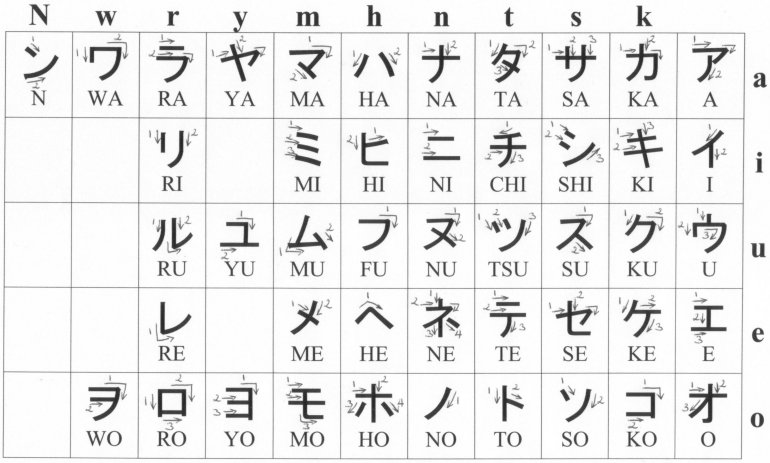

ABCD V.2.8
The matter you are about to witness
is alphabet. Instead of memorizing its meaningless sequence of symbols, we can
see it is arranged in structure of vowels, labials & linguals
and it can be also arranged according to axial structure around vowels

explanations
are at page 3
For those who see in a different
spectre:
This
work supposes that reader knows basics on researched writing systems. The
prominent differentiation of letter & it’s phonemes here’s renounced &
speaking of a letter we are telling whole the range of sounds it can represent.

1
Surprisingly the form of the
english alphabet that is taught to be its preveious formation:
ABCDEFGHIKLMNOPQRSTVXYZ is not that easy to find in the form of an ancient artifact,
not academic table. So Diringer in his over 600 pages & even more images of
“Alphabet” doesn’t show such a presentation. Actually the only images of such
kind he gives are tagbanwa alphabet & runic alphabet.


There’s also an image of the more
wide spread futhark representation, but according to the “In medieval sources,
notably the Poetic Edda, the Sigrdrífumál mentions "victory
runes" to be carved on a sword, "some on the grasp and some on the
inlay, and name Tyr twice."” it happens to be sort of iroha.
2
So the smart step now is to compare
the runic alphabet with the structure.

The shifts of labials off its
column are common: no alphabet, where M would stand in it, is found yet. The
possible reasons of such a situation are supposed in previous versions of this
article, but I’d better avoid it now, for it goes off the range of linguistics
& into occvlt, which is probably not welcome. Yet few moments urge
explanations:
Persian alphabet is in abjad order,
“consonant” alphabets are supposed to have vowels because they use vowels for
its transliterations, so even having some consonant consound they’re more vowel
then the others. و and ו are considered labials not vowels because
they are labial & they follow ه and ה, where ה is often
transliterated with vowel & though ه is usually transliterated as H
(see the similar trouble with greek H, few lines below. also compare with
ugaritic h appointed a vowel, compare it’s graphic image with the ʾi
followed by ʾu appointed labial just as ו was), also “вот что
говорит Сегаль В. С.: «Это —
3
выдох с участием голоса, как бы „придыхание“ перед
гласным звуком или после него. Никакого
уклада речевых органов для звука [h]
не требуется: он произносится расслабленно, без всякого напряжения. Этот звук
не похож ни на обычное русское [г], ни на русское [х]»”. (here’s what sais Segal
V.S.: “It’s an exhale with voice, as an “aspiration” before vowel or after it.
No mode of articulatory organs for the sound [h] is (there’s
double negation in russian) needed: it’s pronounced relaxed, without any
tension. This sound doesn’t resemble neither russian [г] nor russian [x])
θ is considered to be labial
because it is in russian (not only by loan words like θεά (фея, a fairy) for example, but by its
mere phonetic (and numeric) value – which could witness of such a reading in
the period of the alphabet’s adoption or in the previous period, when those
words were loaned) or it rather can be explained by th-fronting. (and the
th-fronting of θ could be the reason archaic F was removed from the line.
Georgian თ [t] or [tʰ] with present
ვ [v] supports the latter,
so does hebrew)
η
is not considered vowel because of its position, but it doesn’t prove it (being
tautologic) if we’re proving the structure in there with it, so we need some other
arguments. And here they’re: its counterparts in other alphabets, such as latin
h, persian ح, hebrew ח (though it is
graphically and phonetically resembles ה, it always sounds as h, but the
other point of view is in russian where it goes и
[i:] which makes it ii actually, at least that’s the way it
looks when it goes in claster of И(Ѝ)ІЇЙЈ. So probably greek H is vowel
& then that’s the first what could put labial θ in that position &
mythological connotations only followed. But that’s deeper in fields of
reconstructions where I still don’t feel competent enough.
H
is not in the velar column probably because X was [h] & H was [ʌʃ]
or [eitʃ] (eighth?). Which makes it II too, because it makes it shin,
which is sin, which is S which is plural suffix in europe along with russian И & germanic N, which probably
comes after egyptian which probably is a form of .
And
it brings us to egyptology, where such an order is the most wide spread now.
And it’s widely spread over souvenir stores:


And
sometimes even with Maat replaced (and W is with it – w is out of that column
too, actually)

4
So
I was digging where does this tradition come from, and I found Budge:

5

https://ia700503.us.archive.org/0/items/egyptianhierogly01budguoft/
6
Brugsch
printed in the first volume of his Wörterbuch (1867) he said – I guess we
should regain this tradition of giving links not by numerals (silent in
fragmented scans) – but as they used to do it in xix.
7
Herrn Vicomte E. de Rouge (s. dessen Note sur
la transcription des hieroglyphes in der Zeitschrift für ägyptische
Sprache und Alterthumskunde, 1866, S. 69 flgd.), he said
8
Surprisingly
enough the order changes chronlogically from the one with replaced M (but not
W) in de Rouge’s to M among labials in Brugsch’s & Budge’s. And then the
tradition is found in meroitic:


and
though one of the images is labeled as “hieroglyphic – demotic” it is
Meroitic.JPG oh,
that’s meroitic having both hieroglyphic & demotic, right.
But let’s watch egyptian hieroglyphic, hieratic
& demotic:


11

As you can see, it wasn’t easy to get the
demotic alphabet, but here it is:
Phonetic
symbols from Ancient Egypt. Tabled are equivalents fom Hieroglyphs, Hieratic,
Demotic and English:
 from: Dersin, D. (ed.). (1997). What Life was Like on
the Banks of the Nile: Egypt 3050 - 30 BC, Time-Life Books, Alexandria, US.
from: Dersin, D. (ed.). (1997). What Life was Like on
the Banks of the Nile: Egypt 3050 - 30 BC, Time-Life Books, Alexandria, US.
and another
one from omniglot.com:
12
The
ugaritic alphabet supports this structure in it’s both orders, though where
does the left order come from is unclear:

13

Etruscan (the image above) is told
to come from phoenician (the image below) with four additional “greek letters”.
And it only fits the axial symmetry if Y is considered consonant.

This
is a modern artefact, but where I took it it’s been told “This crafted
Phoenician Alphabet reproductions of Phoenician antiquities: (12.6 x 12.6 cm)
In
this category, LebanonPostcard presents beautiful frames, metallic phoenician
statuettes and wooden stands reproducing some Lebanese souvenirs of the time of
the great Poenicians!
The
strong glass-covered wooden frames, contain crafted reproductions of Phoenician
antiquities.
Each
frame comes with its metal hook ready to be hung up.
They
are thus one of the best souvenir gifts you can have from Lebanon.
Price:
$25.00”
Reminding
me of the egyptian souvenirs & as I couldn’t find a more academic artefact
with some help of the academic transliteration this supposed copy of some
artefact I couldn’t find in a source, is considered to be reliable enough.
The image to the right looks a
novice copy but it fits both structures with both it’s orders with vowel V
& consonant H. (it contains two different alphabet’s endings & it also
contains obvious mistakes (Ф looks like O on
the front side & Г looks like A on
the back side of the pan). Was it a mistake of the one who made the copy or was
it a riddle to test if a student competent enough to find the misplaced rod
with both it’s orders with vowel V
& consonant H. (it contains two different alphabet’s endings & it also
contains obvious mistakes (Ф looks like O on
the front side & Г looks like A on
the back side of the pan). Was it a mistake of the one who made the copy or was
it a riddle to test if a student competent enough to find the misplaced rod
14
Armenian
alphabet doesn’t fit any of these two structures.
At the first
sight. But if we research it, we can find out there is some classic armenian
alphabet in greek order with extra letters sticked inbetween breaking the
structure:
http://www.aybuben.com/st.php?st=st1ru.html (учёными давно
подмечено...)
The basis
for such a point of view can be the witness of Khorenatsi:
Врам повелел нашему
царю Врамшапуху спуститься в Месопотамию, навести там порядок и рассудить
должностных лиц двух сторон. Тот отправился и привел все в порядок, но испытал
немалые трудности из-за секретаря, так как с тех пор как Месроп оставил царский
двор, там не было ни одного опытного писца, ибо применялось персидское письмо.
По этому поводу царю представился некий священник по имени Хабел и обещал
добыть для армянского языка письмена, приспособленные его другом епископом
Даниелом. Царь не обратил на это внимания, но, прибыв в Армению, застал всех
епископов собравшимися у Сахака Великого и Месропа в заботах об изобретении
армянской письменности, о чем сообщили царю, а он передал им слова монаха.
Услышав, они стали просить его заняться этим столь важным делом. Поэтому он
послал в качестве вестника одного из почтенных мужей нашей страны, близкого ему
человека из рода Хадуни, по имени Вахрич. Отправившись вместе, они крепко
усвоили от Даниела начертанный в давние времена ряд букв, расположенный в порядке греческого (алфавита) и вручили его по возвращении Сахаку и
Месропу.
Об этом также говорит
ученик Месропа Маштоца Корюн:
Тогда царь рассказал
им о неком сирийце, благопристойном епископе по имени Даниэл, внезапно нашедшем
письмена алфавита армянского языка. И когда царь рассказал об этой находке, они
уговорили царя об их обретении. Тогда царь отправил некоего Вагрича с царской
грамотой к некоему иерею Авелу, приближенному сирийского епископа Даниэла.
Узнав об этой
просьбе, Авел немедля прибыл к Даниэлу и сперва сам он осведомился у Даниэла об
этих письменах, а затем, взяв их у него, отправил царю Врамшапуху в Армению. И
привез он (Вагрич письмена) ему в пятом году царствования его. А царь, получив
от Абела письмена, вместе со святым Сааком и Маштоцем весьма обрадовались.
Затем блаженные
радетели, взяв внезапно найденные (письмена), попросили еще у царя отроков,
дабы иметь возможность применить (на деле) письмена. И когда
15
многие из них
усвоили, приказал (царь) повсюду обучать этими же (письменами). Тем самым
блаженный (Маштоц) был удостоен прекрасного звания вардапета. Около двух лет он
занимался преподаванием и вел (занятия) этими письменами.
Но когда выяснилось,
что эти письмена недостаточны, чтобы выразить (все) силлабы-слоги армянского
языка, поскольку эти письмена были погребены под другими письменами и (затем)
воскрешены, тогда они вновь стали хлопотать о том же и некоторое время искали
выхода (из положения).
Под похороненными
письменами судя по всему подразумевают палимпсест.
So, if we compare
armenian to greek & remove those extra letters aside a little, we can see
the previous structure with greek H represented with vowel Э, & θita being not labial
at all. It’s funny, considering the traditional idea that russian was introduced
to kirillic script centuries later. Is it because
of some dialects’ differences or because the traditions of anciently looking glagolica
with its’ original b/d symmetry go deeper than we think?

However the building of axial
structure for armenian alphabet is not possible till the set of old armenian
alphabet is found. Yet it’s been found out that the previous presentation is
somehow obsolete, & the most representations of armenian alphabet don’t
have that “ев”-letter (which is just
a combination of “e” & “в” – at least that’s told
so where I’v taken the image I collaged the one above from.), so the modern armenian
alphabet does arrange into axial symmetry somehow:
and
the set of letters with numeral values wouldn’t 
16
If
we try to arrange russian alphabet to these structures it would be a trouble,
mostly because there’s no labial in second line other then Ё the only labiability of which is
that it’s a form of E sounding like [jo] and transliterated in european
languages as eu (or eV) and it fits the axial structure only if Й does as well (and though Й is a form of vowel И, it never makes a syllable, so it
is hardly a vowel) and it looks even less organized, more like falling in line
only by 50% chance & ё-й variability in some lines, which
doesn’t make it 100% of chaotic probability, but it can be considered the point
where structures are lost.

Ъ & Ь may also be arranged with the rest
of the alphabet along the axis, for they are historically & and in other
dialects, as you can see on the bulgarian further on. And the vowel row is not
just a recent tradition, it was present in the oldest claimed to be found form
of it:
17
If you google for alphabet you
would not get it arranged to the lines as above. Actually the most similar I
could get that way is the following one (and it wasn’t coloured)

And
when I first tried aeiou I only managed to find these branches

And when the search was performed a
year later, in 2015, I found the form I was looking for:

An only image among tons of
irrelevant. Yet much more of boards like this can be found if you search for
“alphabet board”.
18
That alphabet board (as shown in
breaking bad series, by the way) wasn’t found in any other alphabetic system. Searching
for АЕИОУЪ only brought me
this:

It’s bulgarian, the language
russian writing system was actually invented for. And still having the most of
russian alphabet’s fails (no labial in second row since it was removed from
greek & θita first removed to the end of the alphabet only to be lost
when its numeral value of 9 didn’t matter for digital system wasn’t based on
alphabet anymore), it’s still much more structured than russian:

The
most labial letter in the Ъ–line is Ю for it sound like [ju] even though
it looks like {IO} – does it have anything to do with russian Ё or not is not clear.
In
axial structure Ь may be considered
vowel only if Й is too, which
seems legit.
19
Search with these two words: aeiou
alphabet
brought me to http://www.luckymojo.com/nagasiva.html
with its fascinating images:

Yet no academic paper on this topic
was found yet, which doesn’t mean it isn’t there of course.
20
And the further search brought me
to even more obscure fields, so now I want to tell you why M stands out of the
column. The good thing’s I have more than one of them versions. Not so good
thing’s none of these hipotheses have crystallized in structurally certain
system yet. So most recent one is that the alphabet board used to be used as a
grammatic table & M could be replaced with J because in europe there’re two
pronouns to pronounce first person: Me (mij, mein, мне, mois,,,) & Je (я, I, ich, ik, io, ego,,,) – it was
supported by θ standing for the same purpose, though I still don’t know
greek to say what does κ or ζ stand for. Another version was about M
being removed from it’s place because it “gave birth” to L & N – so it was
supposed to keep it in its claster (as ЕЁ, ИЙ, IJ, UVW, ЦЧ, ШЩ,
ЪЫЬ & so on) –
the explanation for greek would be the fact that it used to have F after E (it
was used in numeral system & is believed to be standing for sound [w],
though I haven’t checked those historic assumptions yet. So θ would stay [tʰ]
& why have greek θ-words spread with f-sound would be explained with tʰ-fronting.
The most out of this world explanation is that letters were associated with
different deities & M standing out of it’s place shows a patriarchal
takeover of feminine cultural heritage (and this Mother (Minerva, Maat, Mara? Mut!)
to Jupiter shift is supported with Θεά (фея, θεία) to
Zeus). For the myth reflecting the alphabet’s creation tells of five vowels of
the first alphabet & only two more letters: b & t ( & )
so whole the system was not only deviding the world to male & female parts,
but also probably was invented for music (for that’s the field where the way it
sounds is important – in literature it only makes it easier to use, but homonymy
makes it way less reliable (and a person from another state wouldn’t probably
read it as japanese people could read chinese texts – and some of them still
can)
& )
so whole the system was not only deviding the world to male & female parts,
but also probably was invented for music (for that’s the field where the way it
sounds is important – in literature it only makes it easier to use, but homonymy
makes it way less reliable (and a person from another state wouldn’t probably
read it as japanese people could read chinese texts – and some of them still
can)

And
in that myth, the way it was given by Robert Graves (it can also be found in
Hyginus list, though Graves definitely used another source) – the honour of
creation of the alphabet was given to three Fates over phoronida Io.

21
And
alphabet was used in musical notation

(well, some of it still is)
And this tradition
is out there in many forms:
M is for mille
& it is a synonym for Ī
22
The nature of this image isn’t clear, but its
syllabarian part shows the structure of both single lines & the alphabet
itself (though in the field of iberic writings they use to put k-column in both
front & back of Bs & Ts as well, which correlates the behaviour of K in
alphabetic structure, but it feels more natural to keep it in the center, not
only because it’s column definitely stands along in latin alphabet, but also
because it’s in the centre of the A to V (which sometimes is considered to be
archaic latin without greek line) – and if we remove J & K the centeral
letter would be L, but in academic literature (ISBN 5-02-011147-3 p.76) it’s
been told of M as of central letter.
23
Which writing systems don’t follow
these structures? Somewhere around India from Persian Empire to Japan does K
tend to follow vowels, is it another reason for M to stand out of its “I am”
position? What does макулатура
(maculature) really mean? So
tagbanwa’s actually abugida (top right)


The
table in the right bottom corner is of Brahmi script – brahmic scripts is a
real big family of writing systems & its order seem to influence writing
systems from avestan to polynesian & beyond. Sanskritologists seem to like
its order even more than egyptologists like the abcd sequence stretched to
whole the set

Then there of course other writing
systems: Ge'ez script, though also being an abugida, has order different from
brahmics. Also there’s canadian syllabics and probably more orders are out
there. And if chinese or mayan have any similarity to abecedaria that I haven’t
examined thoroughly yet. Well, let’s start doing it right now. Searching for chinese
phonetic alphabet we can get this:
24

25
Then
there’re these:


Mayan
tradition is lost but the european researchers usually arrange it’s sillabary
in alphabetic order:
This
is de landa alphabet, wrong in many ways, but chronoloically first to
transcribe mayan.
And
on the next page is the modern comprehension of it.
26